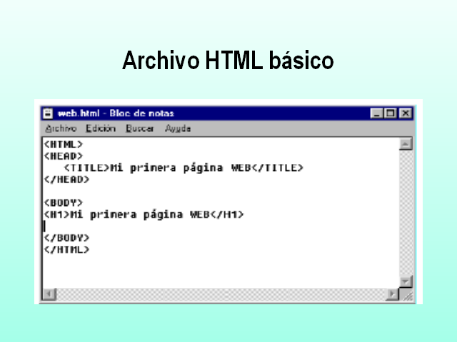

Este sitio tiene como objetivo conocer inicialmente los fundamentos de html
con el fin de sumergir el estudiante en el mundo del desarrollo web y adquirir
competencias que le permita resolver problemas mediante el desarrollo web en html
Fundamentos de Html
HTML, traduce en inglés HiperText Markup Language o Lenguaje de Marcas de Hipertexto.
HTML es un lenguaje de programación que utiliza una serie de códigos llamados etiquetas que
van definiendo los elementos que componen una página web: texto, imágenes, etc. Esas etiquetas
serán interpretadas por un programa navegador de internet (como por ejemplo Internet Explorer)
que mostrará adecuadamente la página web al usuario. Pero HTML5 no se limita a ser un lenguaje
de etiquetas HTML que sólo permiten definir elementos básicos, sino que combina nuevas etiquetas
de lenguaje HTML, propiedades CSS3, Javascript y algunas otras tecnologías. Todas ellas suponen
una actualización de gran potencia al conjunto de herramientas ya existente, y con él se pueden
crear páginas web más sofisticadas y útiles.
Celaya Luna, A. (2014). Creación de páginas web: HTML 5. Málaga, Spain: Editorial ICB. Recuperado de
https://elibro-net.bibliotecavirtual.unad.edu.co/es/ereader/unad/56045?page=8.

Interacción Humano ordenador
La comunicación entre el usuario y el ordenador en general se puede deducir como un intercambio de información mediante
un software, esta disciplina es la encargada de diseñar, evaluar e implementar los aparatos tecnoogicos e intereactivos.
el objetivo es reducir errores, incrementar la satisfacción durante la ejecución de tareas entre humano-ordenador.
Con base en lo anterior es fundamental todo el proceso de diseño de interfaces a la hora del desarrollo web, ya que es ahí
donde se tiene en cuenta cada una de las necesidades y requerimientos del usuario permitiendo a futuro una relación eficiente
entre ambos a la hora de ejecución de tareas.
Recursos virtuales
2, G. A. (01 de octubre de 2020). Universidad de Medellin. Obtenido de Interacción-Humano-Computador_IHC: https://streaming.udem.edu.co/media/interaccion-humano-computador-ihc